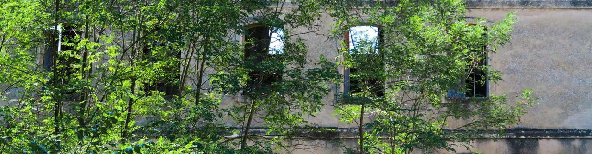

Ruta · Palautordera
Passejada familiar, planera al costat del poble i de la Tordera per conèixer les restes de tres fàbriques iniciades a principis del segle passat i relacionades amb l’aigua i la proximitat del riu.…